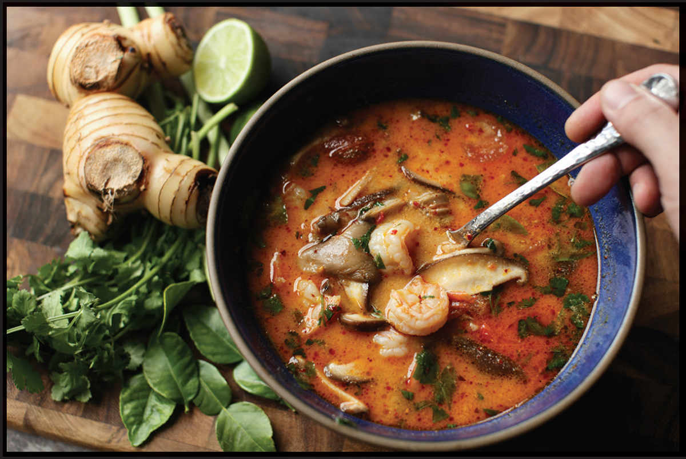

SIMPLE THAI HOT AND SOUR SOUP WITH SHRIMP (TOM YAM KUNG)
|
Yield Serves 4 |
Active Time 15 minutes Total Time 30 minutes |
Nam prik pao is available online or at any Asian supermarket that carries Thai ingredients.
INGREDIENTS
For the Broth:
2 teaspoons (10 ml) peanut, rice bran, or other neutral oil
12 ounces (340 g) large shrimp, peeled, shells reserved
1 quart (1 l) homemade or store-bought low-sodium chicken stock or water
2 fresh lemongrass stalks, bottom 3 to 5 inches only (1½ ounces/40 g), tough outer leaves removed and discarded, tender core bruised multiple times with the dull side of a knife blade
One 1-inch knob fresh galangal, peeled and roughly chopped (⅔ ounce/20 g)
3 fresh or dried makrut lime leaves, hard central stem removed and discarded, leaves roughly chopped (¼ ounce/ 8 g)
For the Soup:
4 fresh red Thai bird chiles, more or less to taste
12 cherry tomatoes, cut in half
5 ounces (145 g) oyster or button mushrooms or shiitake mushroom caps cut into bite-sized pieces
¼ cup (60 ml) fish sauce
¼ cup (60 ml) fresh lime juice (from 4 to 5 limes)
¼ cup (60 ml) nam prik pao
½ cup (120 ml) evaporated milk or coconut milk (optional)
Handful of chopped fresh cilantro or culantro (Thai sawtooth herb)
Tom yam soup is a classic Thai dish that can be as simple or as complex as you’d like. The name translates as “boiled mixed” and refers to the wide range of aromatics that are incorporated in its making. Think of it as an aromatic tea. It has a sour-hot flavor from the inclusion of lime juice and nam prik pao (Thai chile jam), along with aromatics like lime leaf, lemongrass, and galangal. Many modern recipes include a can of evaporated milk for richness. Add coconut milk and it becomes tom kha.
DIRECTIONS
1 For the Broth: Heat the vegetable oil in a wok over medium-high heat until shimmering. Add the shrimp shells and stir-fry until browned in spots and fragrant, about 2 minutes. Add the stock, bring to a simmer, and simmer for 5 minutes. Remove the shrimp shells with a fine-mesh strainer and discard.
2 Add the lemongrass, galangal, and lime leaves. Simmer for 5 minutes. If desired, remove and discard the aromatics, or leave them in and have diners eat around them.
3 For the Soup: Crush the chiles in a mortar and pestle. Add the tomatoes and gently pound to break them up slightly, then add the mixture to the soup. Add the mushrooms, fish sauce, lime juice, nam prik pao, evaporated milk (if using), and shrimp. Bring to a simmer and cook just until the shrimp are cooked through, about 1 minute. Stir in chopped cilantro or culantro and serve.
